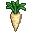
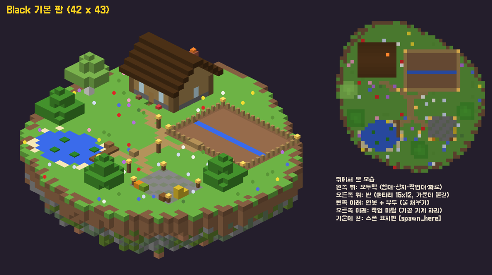
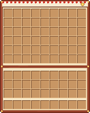
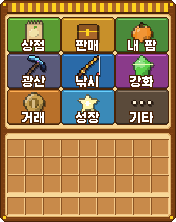
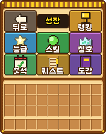
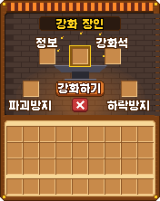
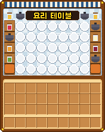

등급 작물
수확할 때 보너스로 등급 작물이 나와요. 레벨이 올라도 확률은 조금씩만 올라요. 등급 작물로 요리하면 요리에도 별이 붙어요.
| 등급 | Lv.1 | Lv.50 | 판매가 |
|---|---|---|---|
| ★ 은 | 10% | 14% | x1.5 |
| ★★ 금 | 4% | 6% | x2 |
| ★★★ 이리듐 | 1% | 2% | x3 |

Black처음 접속하면 지원금 25만원과 파스닙·당근 씨앗, 화분, 구리 물뿌리개, 빵, 요리 테이블, 그리고 Black 곡괭이·도끼·삽·낚싯대를 받아요.
/메뉴 또는 Shift + F. 상점·판매·강화·도감 등 모든 기능을 한 화면에서 클릭으로!
/농장 으로 나만의 섬을 만들어요. 오두막 · 울타리 밭 · 연못과 선착장이 있는 기본팜에서 시작해요. /팜멤버 로 친구를 초대해 같이 지을 수 있어요.
화분(경작지)에 씨앗을 심고 물뿌리개로 물을 줘요. 준 물은 수확할 때까지 마르지 않아요.
다 자란 작물을 빈손이나 괭이로 우클릭. 괭이를 강화하면 행운이 붙어 더 많이! 운이 좋으면 ★ 등급 작물.
/판매 출하함에 넣고 닫으면 끝. 요리하거나 술통·절임병에 넣으면 더 비싸게 팔 수 있어요.


접속할 때 뜨는 리소스팩을 받아야 작물·요리·광물 텍스처와 그림 GUI가 보여요. 거절하면 아이템이 종이처럼 보여요.
한/영 전환을 깜빡해도 괜찮아요. /tkdwja 처럼 영어로 쳐도 /상점 이 열려요.
스타듀밸리 작물 44종. 계절 없이 언제든 심을 수 있고, 농사 레벨이 오르면 새 작물이 열려요.
수확할 때 보너스로 등급 작물이 나와요. 레벨이 올라도 확률은 조금씩만 올라요. 등급 작물로 요리하면 요리에도 별이 붙어요.
| 등급 | Lv.1 | Lv.50 | 판매가 |
|---|---|---|---|
| ★ 은 | 10% | 14% | x1.5 |
| ★★ 금 | 4% | 6% | x2 |
| ★★★ 이리듐 | 1% | 2% | x3 |
3시간마다 주식처럼 ±15% 안에서 오르내려요 (0.7~1.3배). 요리 시세는 0.9~1.25배, 광물 시세는 0.8~1.2배로 움직여요. 나 혼자 같은 아이템을 한꺼번에 아주 많이 팔면 내 값만 조금 내려가요 (최대 -30%, 1시간쯤이면 회복 · 다른 사람과는 상관없음) — 여러 가지를 골고루 키우고 캐는 게 이득! 바뀌면 채팅에 한 줄만 알려주고, 자세한 건 /시세 GUI에서.
최종 판매가 = 기본가 × 시세 × 등급 × (1 + 농사레벨 × 1%)
| 등급 | 물 담는 양 | 충전 최대 범위 | 필요 농사 Lv | 업그레이드 |
|---|---|---|---|---|
| 구리 | 20 | — | 1 | 기본 지급 |
| 철 | 40 | 5×5 | 10 | 7만 5천원 |
| 금 | 70 | 7×7 | 20 | 25만원 |
| 다이아 | 100 | 11×11 | 28 | 50만원 |
| 이리듐 | 무한 | 15×15 | 38 | 100만원 |
물뿌리개를 들고 /강화 하면 한 단계씩 올라가요. 철부터 Shift + 우클릭을 꾹 누르면 충전되고, 떼면 바라보는 곳에 넓게 물을 줘요. 물이 떨어지면 물을 우클릭해서 채워요.
필요 경험치 = 100 × 레벨1.6 · 최대 Lv.50 · 농사·광부·낚시 공통
작물 + 물고기 + 식재료로 요리 50종. 작물마다 그 작물만의 요리가 하나씩 있어요 (작물 44종 = 작물 요리 44개, 고기·생선 요리 6개). 팜에 설치한 요리 테이블을 우클릭하면 요리 화면이 열려요 (처음 접속하면 1개 지급, 상점 도구에서 추가 구매). 요리 값은 재료 값의 1.5배(100원 단위)라 재료로 파는 것보다 이득이에요. ★ 등급 재료로 만들면 요리에도 별이 붙어요.
/상점 식재료 에서 사거나, /도축장 에서 얻어요.
/도축장 은 동물을 잡는 따로 된 월드예요. 동물이 계속 다시 나타나고, 잡으면 요리 재료가 나와요. 팜(섬)에서 잡으면 아무것도 안 나와요. 동물 번식은 막혀 있어요.
/광산 으로 이동. Black 곡괭이로만 캘 수 있어요. 캔 광물은 인벤토리로 바로 들어오고, 잠시 뒤 다시 생겨요. 가끔 광산 강화석도!
| 광물 | 해금 | 드롭 | 리젠 | 가격 |
|---|
심층 광맥은 일반 광석이 다시 생길 때 2% 확률로 심층 광석으로 바뀌어 나타나요. 찾아서 캐면 광물과 함께 보물이 무조건 1개! 비싼 보물일수록 드물게 나와요.
채굴하다 가끔 나와요. 스폰의 대장간(/대장간)에서 정동석을 들고 대장간을 우클릭하면 깨져요 (Shift + 우클릭 = 전부). 광물이나 보석이 나와요.
스타듀밸리 물고기 34종 · 스폰에서만 낚을 수 있어요. 시간 제한은 없고, 날씨에 따라 나오는 물고기가 달라요.
낚시 레벨 10마다 초록 막대가 커져요 (Lv.1 26% → Lv.40 46%).
낚싯대는 /강화 할수록 모양이 화려해지고 미끼가 붙어요.
매일 21:00, 10분 동안 가장 큰 물고기를 낚은 사람이 우승!
1등 150만원 · 2등 75만원 · 3등 35만원
같은 자리·같은 시야로 계속 낚으면 잠수 낚시로 보고 보상이 없어요. 잠수는 /잠수터 로!
/상점 도구 페이지에서 기계를 사서 팜에 설치하고, 재료를 들고 우클릭. 기계 위에 남은 시간이 뜨고, 다 되면 우클릭으로 꺼내요.
| 기계 | 넣는 것 | 나오는 것 | 시간 | 값 |
|---|
작물의 ★ 등급은 가공품에도 그대로 (값도 등급 배율). 꽃은 가공할 수 없어요. 기계를 부수면 기계와 넣어둔 것을 돌려받아요.
인챈트 테이블 · 모루 · 대장장이 작업대는 쓸 수 없어요. 대신 Black 도구를 스폰의 강화 장인(/강화소)에게 가져가 강화해요. 도구를 들고 장인을 우클릭! Black 도구는 절대 부서지지 않아요.
| 단계 | 필요 등급 | 성공 | 비용 | 강화석 | 실패하면 | 효율 · 행운 |
|---|
등급마다 강화 한도가 있어요 — 1등급 +2, 그 뒤 2등급마다 +1 (16등급부터 +10). +5 가 되면 곡괭이·도끼·삽이 네더라이트로 바뀌어요. 최종 효율 10 · 행운 7. 괭이는 행운이 수확에 적용돼요.
강화할 때 돈 + 그 도구의 강화석이 들어요. 실패해도 써요. /잠수상점 에서도 살 수 있어요.
파괴 방지권은 파괴를, 하락 방지권은 단계 하락을 한 번 막아줘요. 상점에서 사고, 강화 GUI에서 쓸지 켜고 끌 수 있어요.
플레이어 등급은 20단계, /등급업 으로 돈을 내고 한 단계씩 올려요 (최종 등급 6억원). 등급이 오르면 팜 크기가 커지고 (1~4등급 100×100 · 5~9 150×150 · 10~14 200×200 · 15~ 250×250), 강화 한도·설치 제한·홈 개수·출석/퀘스트 보상·씨앗 할인·버프·유저상점 등록 개수도 늘어나요. 버프는 /등급버프 GUI에서 하나씩 켜고 끌 수 있고, 야간 투시는 누구나 /야간투시.
/도감 농사 · 광산 · 보물 · 요리 · 낚시 (GUI). 처음 얻으면 "띠링!" 하고 등록, 카테고리를 다 모으면 큰 보상과 칭호!
/출석 연속 출석 보상, /퀘스트 내 레벨에 맞춘 퀘스트 3개, 1시간마다 확률로 핫타임(경험치 2배).
/칭호 업적을 달성하면 칭호가 생기고 채팅에 표시돼요. 도감 카테고리를 다 모아도 칭호!
/팜멤버/유저상점/유저상점 등록 <가격> [개수] (개수를 빼면 손에 든 전부)/창고어디서나 여는 개인 보관함이에요. 창고 하나가 큰 상자 한 개(54칸)! 처음엔 1개, 등급이 2 오를 때마다 1개씩 늘어나 최대 10개.
/팜랭킹팜원들이 판매로 번 돈이 팜 점수로 쌓여요. 친구들과 같이 키운 팜이 몇 위인지 TOP 10 에서 확인!
/우편아이템을 들고 /우편 보내기 <닉> — 친구가 접속 안 해 있어도 보낼 수 있어요. /우편 에서 하나씩 또는 모두 받기. 이벤트 보상도 우편으로 와요.
/잠수터스폰의 잠수터에 있으면 1분마다 잠수 포인트 +1 (가만히 있어도 OK). /잠수상점 에서 강화석 · 방지권 · 플라이 티켓 · 성장 촉진제 · 돈 주머니로 바꿔요.
농장에서 건축할 때 편하게! /상점 도구 에서 티켓을 사서 우클릭으로 충전하고 /플라이.
농장(섬)에서만 날 수 있어요. 시간이 끝나면 천천히 떨어지고 낙하 데미지는 없어요. Sovereign(14등급)부터는 무제한!
같은 줄 위·아래에 설치하고 위에 서서 점프 = 위층, 웅크리기 = 아래층. 최대 64칸. 위에 서 있으면 지금 몇 층인지(예: 3층 / 5층) 화면에 표시돼요.
상점에서만 살 수 있어요 (제작 불가). 부수면 다시 아이템으로 돌아와요.
Shift + F (또는 /메뉴) 를 누르면 그림 메뉴가 열려요. 상점 · 판매 · 내 팜 · 광산 · 낚시 · 강화 · 거래 · 성장 · 기타 — 큰 그림 버튼을 누르면 바로 이동하거나 열려요. 강화 · 요리 · 상점 · 시세 · 도감 · 유저상점 · 우편도 모두 채팅 대신 GUI 화면이에요.




설치 · 사용 · 제작 모두 불가, 갖고 있으면 자동으로 압수돼요.
규칙을 어기면 관리자가 경고를 줘요. 경고 5회가 되면 자동으로 정지돼요. /내경고 로 내 경고와 사유를 볼 수 있어요.
/도축장)/잠수터 에서)/팜정보)명령어를 외우기 어렵다면 /메뉴 (Shift + F) 하나만 기억하세요! 게임 안에서 /명령어 를 치면 내 권한으로 쓸 수 있는 것만 보여줘요. 누르면 복사돼요.
| 분류 | 명령어 | 설명 | 영어로 쳐도 OK |
|---|